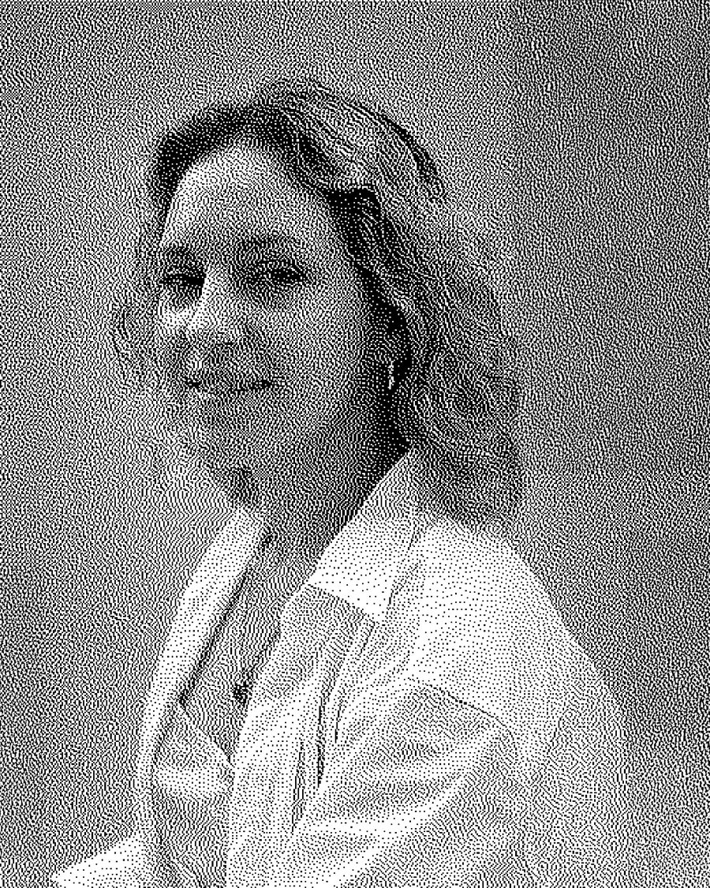

Оксана КрижанівськаOksana Kryzhanivska
Україна / Мілвокі, СШАUkraine / Milwaukee, USA
Народилася в місті Луцьк, художниця і викладач електронного мистецтва, працює в Мілуокі, США. Її практика шукає поєднання технології та мистецтва через взаємодію з втіленим існуванням в цифрових світах. Оксанині мета-всесвітні інсталяції, скульптури та екранні роботи були представлені на Ars Electronica'23 та Venice Arsenale Nord'22, і в галереях Канади, США, Австралії, Німеччині, Італії, Китаю. Оксана досліджує взаємовплив технологій та жіночого тіла як дослідниця та практикуюча художниця. Ця практика досліджує, як естетичний досвід втіленої взаємодії з плотоподібними об'єктами формує нові уявлення про людське тіло. Художниця просить глядачів замислитися над сенсорними взаємозв'язками людини в сучасну технологічну епоху, активно переживаючи скульптурні роботи Оксани за допомогою численних органів чуття та електронної сенсорної реакції.
Born in Lutsk, an artist and teacher of electronic art, based in Milwaukee, USA. Her practice seeks to merge technology and art through interaction with embodied existence in digital worlds. Oksana's meta-world installations, sculptures, and screen works have been presented at Ars Electronica'23 and Venice Arsenale Nord'22, and in galleries in Canada, the USA, Australia, Germany, Italy, and China. Oksana investigates cross-influencing of technology and a female body as a researcher and practicing artist. This practice inquires how an aesthetic experience of embodied interaction with flesh-like objects forms new notions of the human body. The artist asks the audience to ponder the human sensory relationships the current technology-driven age by actively experiencing Oksana's sculptural works with multiple senses and electronic sensory response.